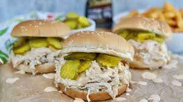

Pulled Chicken Sandwich

Description
These pulled chicken sandwiches are incredibly easy to make… and oh-so-satisfying!
Whip up a batch and watch them quickly disappear.
Ingredients
- ½ cup Chicken Bone Broth or Stock
- 1 tbsp. Everything But The Bagel Seasoning
- 6 Boneless, Skinless Chicken Breasts
- Alabama White Sauce
- Dill Pickles, as needed
- 4 Sandwich Rolls or Hamburger Buns
Directions
-
CROCKPOT CHICKEN: Place Chicken in the crockpot and sprinkle with seasonings.
Pour chicken stock over chicken and cook on low, for 6-8 hours.
(If using frozen chicken, chicken stock is not necessary.) Remove Chicken with tongs and use two forks to shred.
-
TO ASSEMBLE SANDWICHES: Evenly divide shredded chicken among the sandwich rolls or hamburger buns.
Drizzle with desired amount of Alabama White Sauce and top with pickles. Enjoy immediately.